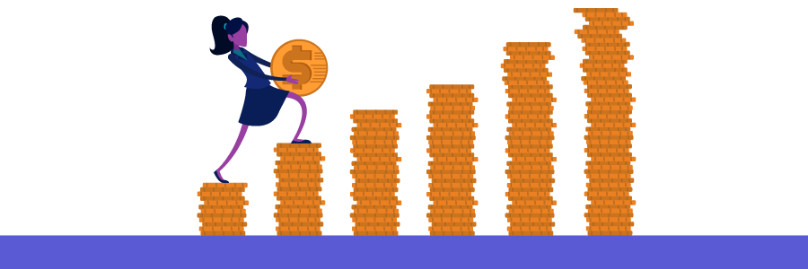

Conheça o mercado
Você sabe como identificar oportunidades de negócio?
Identificar oportunidades
Você já teve algumas ideias para o empreendimento? Ideias são pensamentos iniciais, e quase nunca estão prontas para serem aplicadas.
A partir destas ideias, o próximo passo é identificar se entre elas existe uma oportunidade. As oportunidades estão relacionadas às necessidades e expectativas do mercado.
Para confirmar se a ideia é uma oportunidade e aproveitá-la ao máximo, é preciso avaliar riscos, desafios, vantagens e desvantagens, recursos que possui e quais precisará providenciar para explorar a oportunidade. Quanto mais souber sobre ela, melhor.
É necessário que não falte disposição para empreender, pois é impossível pensar em diferentes ideias, analisar e explorar uma oportunidade sem dedicação e comprometimento.
Clique nos itens abaixo e saiba como validar uma oportunidade.
Levante o maior volume de informações para a tomada de decisão.
Avalie se as informações possibilitam a implantação do negócio, se há disposição para investir nos recursos necessários para fazer o negócio funcionar.
Para decidir se seguirá em frente, considere os riscos e os desafios inerentes à oportunidade.
Tendências – Criatividade – Inovação – Valor
Uma vez identificada a oportunidade de negócio, é hora de avaliar as tendências relacionadas à atividade empreendedora e pensar como a criatividade e a inovação poderão contribuir para gerar valor ao mercado que se pretende atender. Clique nos temas para saber mais sobre cada um.
Tendência pode ser entendida como determinada direção que as pessoas e empresas tendem a seguir impulsionadas por contextos, comportamentos, acontecimento e situações. Por exemplo, o desenvolvimento tecnológico acelerado e a comunicação pela internet geraram a tendência de que as empresas busquem a transformação digital em suas atividades e até mesmo no relacionamento com os clientes.
O que fazer: pesquisar e analisar para quais direções o setor no qual pretende empreender está apontando.
Criatividade é o processo de criar ideias combinando diversas informações e fatores, fazendo mais do que o óbvio.
O que fazer: questionar-se sobre como pode fazer de forma diferente o que já é conhecido. É preciso registrar as ideias que surgirem para que possam ser analisadas quanto à inovação e ao valor que representam.
Inovação pode ser entendida como a criatividade aplicada para gerar valor econômico e social, ou seja, para gerar resultados positivos para quem transforma a ideia criativa em um produto ou serviço interessante para quem o utiliza ou usufrui.
O que fazer: planejar e testar as ideias para avaliar qual delas agrega maior valor ao negócio e ao mercado. Identificada uma oportunidade, é preciso torná-la realidade.
Neste contexto, o valor não se refere a aspectos monetários, não se trata do preço das coisas. É o valor percebido pelo cliente no produto ou serviço oferecido. Pensar no valor é pensar nas necessidades e expectativas dos clientes para identificar como entregar um produto ou serviço que atenda e supere o que é esperado e desejado.
O que fazer: analisar constantemente se a proposta de valor está chegando aos clientes e sendo percebida, efetivamente, como algo de valor, que contribua ou traga algum benefício para as pessoas ou empresas.
O empreendedor precisa desenvolver a criatividade e promover a inovação. A pressão e a rotina do dia a dia, por vezes, impedem o pensamento criativo, a visão estratégica e a inovação.
▶ Para ser competitivo no mundo dos negócios é necessário fazer o que outros ainda não fazem, ou fazer melhor o que outros já fazem, buscando exceder as expectativas dos clientes na entrega de produtos e serviços.
▶ Iniciar um negócio da mesma forma que todos os outros existentes é sair em desvantagem, uma vez que os outros já têm sua clientela. Para conquistar uma fatia deste mercado é preciso encantar o cliente de alguma forma.
▶ Ao falar de inovação, fala-se tanto de aspectos tecnológicos como das relações de trabalho e dos processos do negócio. A inovação é um dos fatores que contribuem para que a empresa seja competitiva.
Exercite a avaliação de oportunidades. Clique no ícone abaixo e faça download de um modelo.
Riscos calculados
O mundo dos negócios exige do empreendedor uma boa dose de ousadia e de coragem. Muitas vezes, estas atitudes implicam correr riscos para garantir o crescimento de um negócio, o que não tem nada a ver com ser inconsequente. É preciso planejar os passos: calcular o momento, a circunstância e a forma de arriscar para fazer o seu negócio crescer sem se desestabilizar.
Correr riscos calculados envolve avaliar as alternativas, controlar os resultados e, com isso, naturalmente, reduzir os riscos no seu negócio. Para isso, é fundamental que você realize um planejamento cuidadoso a fim de verificar se você já tem todas as informações sobre o negócio e o mercado, se os recursos que possui atendem à necessidade inicial do negócio e até mesmo como buscar alternativas caso algum imprevisto aconteça.


Você entende a diferença entre correr riscos calculados e tomar decisões sem critérios? Você costuma pensar nos imprevistos e em como lidar com eles? Pense em uma situação em que correu riscos e como reagiu a eles.
Mercado
Mercado é onde se estabelecem as relações de oferta e procura. Para estabelecer um negócio e ser competitivo, você precisa conhecer o cenário empresarial no qual pretende empreender. Além disso, é necessário conhecer diferentes mercados: consumidor, concorrente, fornecedor e como buscar parceiros.
Clique nos tipos de mercado para saber mais.
O mercado consumidor é formado por pessoas e empresas que buscam satisfazer suas necessidades e têm interesse em comprar os produtos ou serviços que você tem para oferecer. A principal razão da existência de um negócio é conquistar seu público-alvo. Para isso, é preciso satisfazer às necessidades e desejos do cliente, entregando-lhe o valor esperado. Desta forma, o empreendedor que pretende iniciar um negócio, precisa conhecer como seus potenciais clientes pensam e agem, e como eles esperam ser atendidos. Ter um olhar atento para o mercado consumidor é tão estratégico aos negócios que ampliaremos este tema numa próxima etapa do curso, quando falaremos mais sobre público-alvo, para quem ofertar os produtos ou serviços, e sobre as possibilidades de relacionamento com os clientes.
O mercado concorrente é composto por pessoas ou empresas que oferecem produtos ou serviços iguais ou similares àquele que a sua empresa oferecerá, atendendo o mesmo público-alvo e atuando na mesma região. Você poderá aprender muito com seus concorrentes. Por isso, é importante saber quem são, quantos são e como atuam. É importante analisar não apenas quantitativamente (quantidade), mas também qualitativamente (como são) os concorrentes. Analisando a concorrência, você poderá identificar formas de atuação que atendam necessidades dos clientes que não estão sendo vistas, identificar novos mercados que podem ser atendidos, aprimorar estratégias de comercialização e comunicação, entre outras oportunidades. O que pode se transformar em vantagens competitivas para o negócio e diferenciais para os clientes que você pretende atender. Conhecendo como atuam seus concorrentes, e o que os clientes consideram mais importante ao escolher comprar destas empresas, você poderá encontrar seu conceito de negócio e evitar erros. Conceito é a maneira como você entende que sua empresa deve ser, como agirá e qual diferencial oferecerá.
Não é possível empreender sozinho. Todo empreendedor precisará, em algum momento, se relacionar com pessoas ou empresas que forneçam matéria-prima, insumos, serviços, sendo estas empresas ou profissionais chamados de fornecedores ou parceiros.
"Fornecedor é toda pessoa física ou jurídica, pública ou privada, nacional ou estrangeira, bem como os entes despersonalizados, que desenvolvem atividade de produção, montagem, criação, construção, transformação, importação, exportação, distribuição ou comercialização de produtos ou prestação de serviços."
Código de Defesa do Consumidor.
Quanto mais forte a relação de parceria com o seu mercado fornecedor, maior a possibilidade de ganhar espaço no mercado. Alguns pontos devem ser considerados na identificação de fornecedores: preço, forma de pagamento, localização, prazo e pontualidade na entrega, qualidade, valores praticados e reputação.
Ter visão ampla, analisando todo o cenário empresarial, os ambientes interno e externo da empresa, entendendo que a empresa é um organismo vivo, que precisa se relacionar com clientes, fornecedores e concorrentes, aumentará suas condições de ter uma empresa competitiva.
Considerando que você busca atender uma necessidade e agregar valor a um determinado público, clique e faça o download para registrar pesquisas do mercado concorrente.
file_downloadColocando em PráticaVocê conhece os principais aspectos do mercado onde vai atuar? Quem será o seu cliente? Onde ele está e como chegará até ele? O que é decisivo para o seu cliente na hora de finalizar a compra? Qual a quantidade de clientes que terá potencial para atender? Em quanto tempo alcançará potencial para ampliar o negócio?
Exercícios
1. Ao identificar uma oportunidade, é preciso analisar um conjunto de informações para decidir se ela é viável. Nesta análise estão:
2. Além de identificar a oportunidade de negócio, é preciso avaliar as tendências do mercado. Para isso, o empreendedor deve: